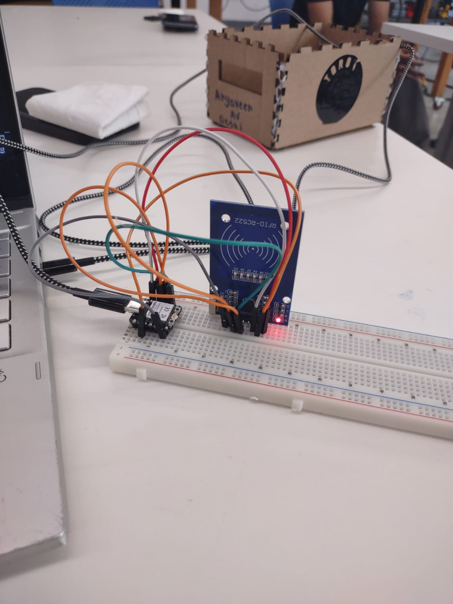
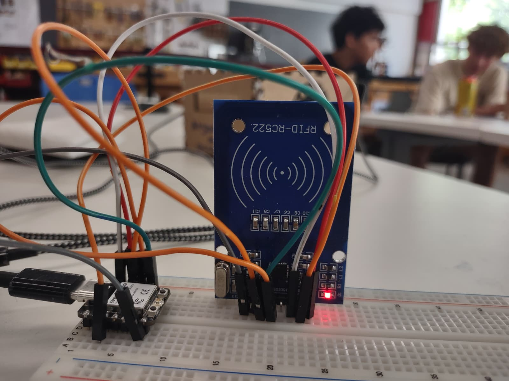
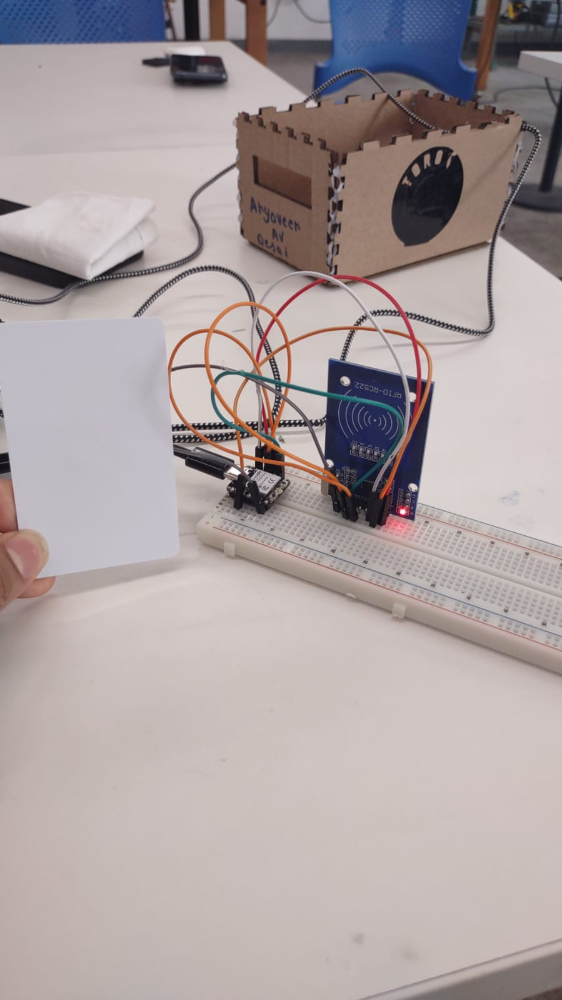
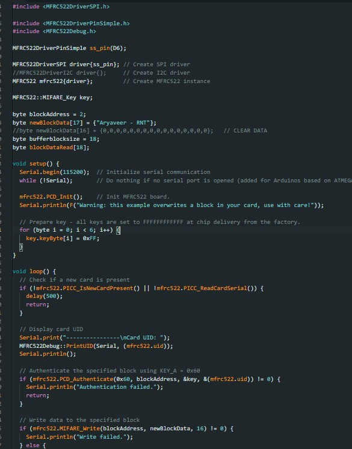

Project1
This week we were tasked with doing a micro controller programming .I could have choosen to continue and just add a motor onto my project and call it a day.But being the oversmart (not in a good way)kid I am I decide to burden myself with a troublesome amounnt of work just enough amount of work that I woulld ponder about how to go on with it for the entirety of my week.I am making an RFID SENSOR that is it uses a card to to act as an open and close.I use ton of Pin to Pin wires connecting it to the required boards.  Using a bunch of help from SIR BOBBY and random nerd I made somwhat of a progress .But more was neccessary.A lot more.I spent countless hours coding the program to work but to no success. Somehow the problem in my code just seemed to be that I had downloaded the wrong library from it .An hour wasted.But thanks again to SIR BOBBY for helping me out . After the long montonus hours of working . I had done it ,I had accomplished my goal.  Here is the explaination/documentation.of the work: First connect the SDA to GPIO5 which acts as data input point. Then connect the SCK to the GPIO 18 that is the SPI clock. Then connect MOSI and GPIO23 that is the SPI data input .Follow on with MISO to GPIO 19 for SPI master-in-slave-out, I2C serial clock, or UART serial output. Then IRQ should not be connected sinceInterrupt pin; signals the microcontroller when an RFID tag is nearby. Then RST to GPIO 21 for LOW signal to put the module in power-down mode; send a HIGH signal to reset the module. Follow on with GND to GND .Lastly 3.3V to 3.3V as Power supply (2.5-3.3V)  Here is the code: as an image  A video showing how it works: